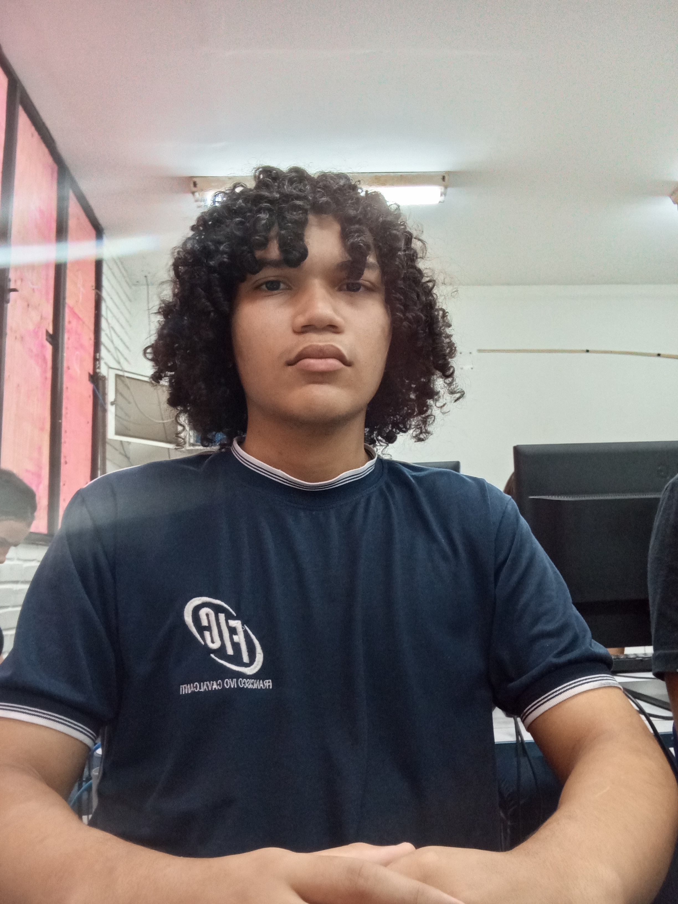

sobre mim
meu nome é johnatan willian, pode me chamar pelos dois nomes.sou estudante de TI (computação)
Costumo demonstrar criatividade na execução de atividades, no entanto, necessito primeiro compreender a base teórica e observar uma aplicação prática inicial para assimilar o conteúdo. Após adquirir experiência, consigo evoluir de forma consistente, aprimorando meu desempenho e acelerando o processo de aprendizagem..
Estou em busca de adquirir conhecimentos básicos em programação, com o objetivo de, futuramente, compreender conceitos mais complexos e desenvolver a capacidade de resolver problemas como um programador.